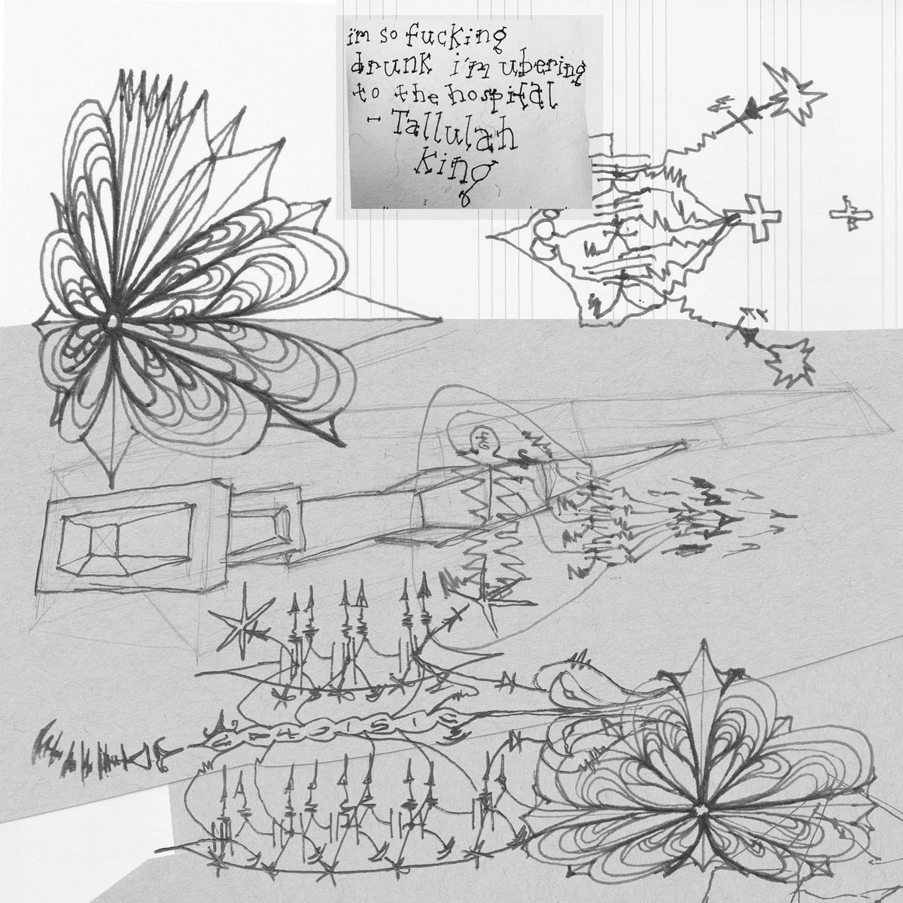

Here is a list of every sadnoise Album and EP, this list does not include singles unless specified. Also see discogs.
Dreaming in the Mercury World
Digital Album, WAV, CD
Sadnoise
9
1. Do not miss the opportunity 00:13
2. Through Inconspicuous Doors 23:04
3. With Long Black Velvet Curtains 16:32
4. Ten Thousand Financial Wizards 05:44
5. Weather Guru 23:39
6. The Computer and the Big Sound Machine 07:27
7. The Poison Dart Arrow is my Safety Dog 23:30
8. Throw the Fish into the Sky Water 04:10
9. THIS is the voice of the TAKIS 02:29
Put a lot of green onions in the mouth of the fish, right?
Album art by James Iannone from his artist book titled "Chemical Wedding"
wading through morning flowers under orange heat, with feet stuck under thick brown honey
Digital Album, WAV
Sadnoise
4
1. there is autonomy in the creation of strung out intertwined dandelion stems, there is no hope in the spiral of pedals, underneath the towering blades of marble grass 16:06
2. i don't want to listen to your story about your four failed marriges and how your daughter wont talk to you after you did ayahuasca in paris 13:10
3. html at the matcha not bar 10:08
4. nakedness is the raw, its the self, the nudeness is still, it doesnt feel moving, a capture of performance, a very strong distinction, involding how women are positioned in that way, in media, a strong discernment. Where is that line blurred? 01:50
are you listening to yourself? is the bigger bubble an illusion? where do you draw the line.
Blinded Singularity - A Compilation
Digital Album, WAV
Sadnoise
11
1. b01 10:13
2. 02 202011117 1715 12:29
3. 01 20201115 0018 16:54
4. Mnemosyne 11:14
5. data bird goes to the bath house 11:23
6. air cav 08:29
7. data cloud altitude 09:34
8. density solar composed 16:28
9. music for girls with gold plated steel pipes 06:14
10. bath 06:35
11. meaningless annoyance 30:33
Compilation of ambient tracks from 2019-2025
credits
released July 24, 2025
Album art by James Iannone from his artist book titled "Chemical Wedding"
release
format
date
album art
trackcount
live paintings in sound '24
Digital Album, WAV
Kasper Jeppesen
13
1. the wetness of soil 07:25
2. night stroll 02:38
3. fuzzy socks 08:08
4. bespoke maple syrup 05:27
5. disoriented 11:31
6. puzzled 04:22
7. blown glass 11:17
8. malt, barley, wheat and oak 23:47
9. pervert 07:31
10. molla 09:00
11. a candle that smells like her room 05:47
12. orca workshop 03:53
13. 10 people that had sex with asher white in a room to 05:48
Addressed to the King’s Mistress, Ms. Tallulah-Ocone Baggarlee
Digital Album, WAV
Femi Shonuga and Betsey Lee
12

1. conduit 10:42
2. Airjazz™ 14:33
3. they're gonna want baaaad, they're gonna want you worse than you want them to want you 10:18
4. four out of five gynocologists feat. Dylan Barry 13:49
5. she dont give a f*ck daily #idgafdaily 04:48
6. Live at Holyoke Media 240823 15:47
7. Live at The Bad Old Days 08152024 18:55
8. girls und panzer 06:59
9. zipppppppppppppppppp 20:28
10. fill your suitcase with matcha 06:24
11. dovetails on the dancefloor / a couple of chill girls that like to code 06:44
12. dog with red apple 16:32
aamalivisza
Digital Album, WAV
Hannah Rosies
7
1. aamalivisza 06:51
2. beirgarten 14:02
3. srine theme 04:48
4. arbralivia 11:59
5. fat fish theme 15:04
6. you lost fourth in time (drama) 17:36
7. song in foggy waters for wooden birds and grey cold air creeping along still moss 10:21
I couldn't tell who it was, in the red light
Album, WAV
ClaireClaire
8
1. a song for empty words for her 17:40
2. gongues pulse meditation 14:12
3. clock pulse rail train 10:16
4. xiaohongshu internet love 10:08
5. to the hurt, flowers wont do, with yellow gourds and wet grass 07:30
6. gewei in mountainous dust, without horns, staring into low clouds 06:51
7. dogvoice 04:26
8. blink twice if the tulips leaves fell tired in the arid fall breeze 04:02
a singing bowl, a scale, a computer monitor, beige couches, a small window, a large window, high fidelity speaker cabinets, a black stain, brick walls, a hand whisk, patterned carpet, two laptops, an antique lamp, and a porno magazine.
xiaohongshu internet love is the roolz gewei, without its horns, with hairy hats.
A Room of Dry Plants, A Compilation
Album, WAV
ClaireClaire
12
This release is a collection of collaborative work from 2020-2024. This work is a part of the ritual collection, representing ideas of the drum circle, and collective ritual practice, a wholeness and connection, a place of many tongues.
This album features collaborations with:
Adrian Ocone,
Mark Cetilia,
John McKenna,
Adeline DeBella,
Marie Carroll,
Martin Baggarly,
xlr sex (Femi Shonuga and Adrian Ocone),
Triplets (Femi Shonuga and Mark Cetilia),
crazynoise (Marie Carroll and Femi Shonuga)
24tb of debian yaml uncensored
Album, WAV
Femi Shonuga
6
1. 3 Michelin Stars Ubuntu Cuisine 01:11
2. Praise to the Yellow Jazz Diamond 11:49
3. Your Nine to Five Job Made You A Healthy Human Being/The Nonchalant Finance Girl 06:41
4. Seduce the Robot 08:40
5. Of Corse I Cut My Apples So You Can See The Star 08:29
6. My Thoughts On Peace Pilgrim 22:39
Voyager
EP, WAV
Hannah Rosies
10
1. voyager 07:52
2. airlock 11:44
3. N98h32 09:10
4. J3equ9 09:56
5. drime2v4qwq5t6 05:52
6. K9g348 04:23
7. radio dscan 04:47
8. zoewelshgate 13:21
9. Nk45j6 BG061021 22:20
10. sta per nfa nmi nox sis 13:08
This release is an collection and data log of atmosphere and gas clouds.
loupesoupe
EP, WAV, Soundscriber Disk
Femi Shonuga
9
1. TeenyMachiney - locked like your cock 02:10
2. TeenyMachiney - number sequence 02:27
3. dead bitches global - cold stars hang (locked loop) 05:00
4. dead bitches global - cold stars hang (riding the groove) 04:04
5. locked groove 1 03:03
6. locked groove 2 04:34
7. locked groove 3 01:42
8. 5 year old fish archery gold medalist 04:49
9. look at the pigeon lady's unpainted fingernails 04:21
2 second locked grooves recorded on repaired soundscriber
SYSTEMS
Album, WAV, PDF Paper
Hannah Rosies
11
1. meditation (sih Teletype) 04:02
2. bath (sih Cocoquantus) 06:35
3. digitamblamAh (sih Double Knot) 14:18
4. i get too cold drawn some that (sih Chaturbate) 01:56
5. jazz beat in soil [movement 1] (sih Coalescence) 17:36
6. jazz beat in soil [movement 2] (sih Coalescence) 17:36
7. pearls (sih Orca) 10:42
8. pleasantly drunk, with wings (sih Wingie) 04:01
9. swih aybz intersexon (sih ppooll) 07:45
10. all of your technology will function properly this mercury retrograde (sih rungler) 06:37
SYSTEMS
is an album archiving written and sonic explorations of various analog and digital systems that I use during the process of designing sound, as an attempt to demystify some synth esoteria, and a continuation of the story of the data bird, amongst other poems.
Listen to this album in full or in smaller periods of time, in direct sunlight, or a low lit environment, preferably with headphones, or speakers spread far apart. Sit or lay down in a comfortable place and position. Have your favorite snacks or beverages nearby for occasional consumption. Read the track stories as the corresponding tracks play.
RITUAL
EP, WAV
Hannah Rosies
13
1. one hundred thousand affection 00:43
2. sneezing onto the train tracks makes the third rail explode in sparks 02:01
3. where are you? 02:17
4. there's something strange about falling into wet grass 04:08
5. waterfierce; are canteens chic in? 05:04
6. wawawawawa, not listening 05:18
7. bugs having sex in the sand under scorching daylight 06:52
8. the fact that you were on 4chan in 2015 is actually really concerning to me (surfing the world wide web mix) 11:24
9. what's your project name? are you classically trained? 13:00
10. child bearing (blippoo mix) 14:39
11. well, well, look who decided to show their pretty little face around here 15:46
12. white woman LIES and DECEIVES me 18:50
13. iced chai latte with oat milk and two pumps of that juice your brain secretes while doomscrolling 30:00
Ritual 1 is the first release in a series of Albums I'll be releasing every month for a year as part of my thesis. This series focuses on ideas of sound as ritual practice along with themes of architecture, dreams, land acknowledgment, academia, indigenous practices, sexuality, love and relationships and the internet. The purpose of this series is to really dive into the idea of recorded improvisation as a ritual practice and generative/algorithmic systems as a connection to nature and the organic/organism. Sadnoise has always been as much about the conversation between the internet and nature or the "absence" of the internet as it has been about the interaction between produced or manipulated sound and physical space.
Each album cover will be a work of Hannah Rosies, whose drawings I've come to have a deep connection with since the cover of my EP Hyperencoder from 2021. The textural and organic nature of these drawings give them so much depth and spatial quality, which I think provides the perfect visual context for listening to this work blindly, as I would hope the listener falls into these tracks as much as I would love to fall into one of these drawings.
On a more technical side, these releases will most likely be explorations in nonlinear timing strategies, sampling and heavy granular synthesis and delay processing. With occasional saw waves.
live pictures in music '23
EP, WAV
Hannah Rosies
8
1. of relation to my undergrad architecture thesis 00:34
2. music for girls with gold plated steel pipes and 4 humidifiers 06:14
3. providece rhode island freejazz duo name generator dot com free online 02:48
4. a past partner of yours will soon reach out to you in the new year to talk or resolve any loose ends, listen to this audio in full or receive 1000 years of bad luck 07:55
5. ambient by design 25:05
6. black lace ultra shear transparent leggings/tights/stockings 09:52
7. therabody 04:06
8. what do you mean you dont like me? I googled your birth chart and it said we were perfect for eachother 13:04
A collection of recordings from live shows, and unreleased tracks from 2023.
New Musical Resources
Album, WAV
Lara Karadogan
23
1. girls with long sharp knives 02:01
2. requiem 05:55
3. sifting instrumental 08:37
4. nul voi esc blk 04:55
5. what unit of measurement is used to measure water vapor 05:33
21. emelia friend does not exist (Messica Arson Remix) 03:05
22. girls with long sharp knives -i got so much soul- (Nova New Chorus Mix) 02:59
23. girls with long sharp knives (sadnoise she knows everyone mix) 01:54
Mastered by Christian Lewis Lyon
supreme magic center dot
Album, WAV
Andi Szurley
15
1. i don't really know what words to say, I'de rather sleep in 08:06
2. this room is warm 04:40
3. these sounds are not florescent white 06:20
4. insert its giving blank etc etc words 10:42
5. i will not fail my math class 05:34
6. grounded reverse downwards 02:48
7. subaudio 04:06
8. crunch time 09:11
9. it be your own son 05:12
10. it could use some 02:16
11. about 01:55
12. she says words 01:31
13. so when are you going to ask 15:27
14. i hate that going to school alone makes my business everyone else's business (i make all of my business public on the internet) 31:33
15. i'm hanging out with his girlfriend, we're hanging out in the rv, we go dancing for a couple of hours 19:23
QGIS
Album, WAV
Femi Shonuga
10
1. wetness 03:59
2. feat. adrian ocone as "bff" 04:22
3. burning 06:33
4. your assignment is to gentrify this neighborhood 05:49
5. something about the environment 04:41
6. landscape architecture 02:15
7. something about architecture 01:46
8. rain track, its digital at night 03:12
9. stereo mouth 03:23
10. purring for linux 07:44
a navigation of the cocoquantus.
cyb sym int cav dov
Album, WAV
Owen McCallum-Keeler
12
1. harmonic w refresh rate init 03:23
2. alt effe esc density solar composed 16:28
3. sleep shift uv birds solar composed 06:45
4. data cloud altitude embed insert 09:34
5. air cav st c 08:29
6. env keymap swamp syntax 05:00
7. tilda wings interlude 02:59
8. digi chan airways 09:29
9. autonomous sorting macrodata return 07:59
10. writing to disk a 02:52
11. writing to disk b 06:07
12. relating to or characteristics of the culture of computers 05:56
del root lrot exp last
Single, WAV, Tape
Mom
2
1. ascore20220627050712 10:02
2. bscore20220627052211 14:13
Data Bird
Album, WAV
Yuka Annabelle-Tamura
10
1. this is the sound of a data bird 03:09
2. data bird lies in the grass 11:36
3. data bird waits patiently 02:07
4. data bird falls asleep on a nest of ones and zeros 05:21
5. data bird goes shopping 01:36
6. data bird waits for the bus in the rain 02:06
7. data bird finds love on the internet 04:45
8. data bird goes to the bath house 11:23
9. data bird walks home alone at night 05:44
10. data birds last call 02:19
Hyperencoder
EP, WAV Binaural, Quad, 3OA 24ch
Hannah Rosies
7
1. Trajectories 01:21
2. Figure Ground 02:13
3. Vector Melody 04:30
4. SM03BX3VC2 04:24
5. Conduit 05:40
6. Hyperencoder 09:10
7. Candy 09:33
This release is a collection work from Spatial Audio, a class that focuses on creating immersive 3D sound experiences using high order ambisonics, multichannel sound and binaral audio. All tracks (aside from remixes) were composed for 24 channels and binuralized for stereo listening.
Over the course of my explorations with ambisonics and multichannel audio, I focus on ways I can create impossible abstract spaces by synthesizing all of my source material and abusing the freedom I have within the software used within the field of spatial audio and ambisonics such as the Spat 5 library in Max and the IEM plugins meant for use within a DAW.
All source audio comes from my eurorack modular synthesizer and the Serge modular synthesizer at RISD.
Sound Synthesis for Synthetic Fibers
Album, WAV
Femi Shonuga
6
1. x1asc001 04:01
2. x2bsc002 04:41
3. smssx500 08:01
4. smscx201 07:09
5. smscx602 07:00
6. smssx703 06:09
This album is a collection of works from my Sound Synthesis class, using Supercollider and the Serge modular synthesizer.
Interlude
Album, WAV, Tape
Kaitlyn Hui
7
1. 0000 09:19
2. 0001 12:29
3. 0010 (feat. stonewashed world) 13:34
4. 0011 16:13
5. 0100 16:54
6. 0101 18:00
7. 0110 18:41
A collection of tape loops originally recorded December 2020
Just a Gray Mass
EP, WAV, Sadnoise & Stonewashed World
Olivia Springberg
7
1. intro 03:14
2. vacant 13:30
3. shattered glass 08:33
4. just a grey mass 11:48
5. north of 15:14
6. chalk 08:25
7. outro 01:14
This EP is a collaboration between me and Olivia Springberg :)